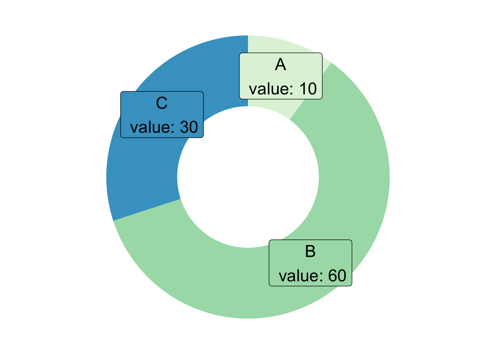

Donut plot
definition - mistake - related - code
A donut plot is a pie chart with a hole in the center. It’s a way to show the distribution of a categorical variable, but it can be a little bit tricky to read. It’s not recommended to use it if you have a large number of categories.
It’s similar to a pie chart, but it’s easier to compare the size of the slices. It’s also possible to add a number inside each slice to show the exact proportion.
# load library
library(ggplot2)
# Create test data.
data <- data.frame(
category=c("A", "B", "C"),
count=c(10, 60, 30)
)
# Compute percentages
data$fraction <- data$count / sum(data$count)
# Compute the cumulative percentages (top of each rectangle)
data$ymax <- cumsum(data$fraction)
# Compute the bottom of each rectangle
data$ymin <- c(0, head(data$ymax, n=-1))
# Compute label position
data$labelPosition <- (data$ymax + data$ymin) / 2
# Compute a good label
data$label <- paste0(data$category, "\n value: ", data$count)
# Make the plot
ggplot(data, aes(ymax=ymax, ymin=ymin, xmax=4, xmin=3, fill=category)) +
geom_rect() +
geom_label( x=3.5, aes(y=labelPosition, label=label), size=6) +
scale_fill_brewer(palette=4) +
coord_polar(theta="y") +
xlim(c(2, 4)) +
theme_void() +
theme(legend.position = "none")
Donut plots are used to visualize the
distribution of categorical data. They are
particularly useful when you want to highlight the proportions
of different categories within a dataset. The central hole of the donut
plot can be used to display additional information, such as
total values or percentages, making it easier
to interpret the data at a glance.
Compared to pie charts, donut plots provide a more effective visual comparison of category sizes due to the space in the center, which allows for a better understanding of the proportions. However, they are best suited for datasets with a limited number of categories, as too many slices can make the plot difficult to read.
Key purposes of using a donut plot include:
additional information in the center of the
plot for enhanced data interpretation.The donut plot is a variation of different charts. Here are some examples:
Data To Viz is a comprehensive classification of chart types organized by data input format. Get a high-resolution version of our decision tree delivered to your inbox now!

A work by Yan Holtz for data-to-viz.com